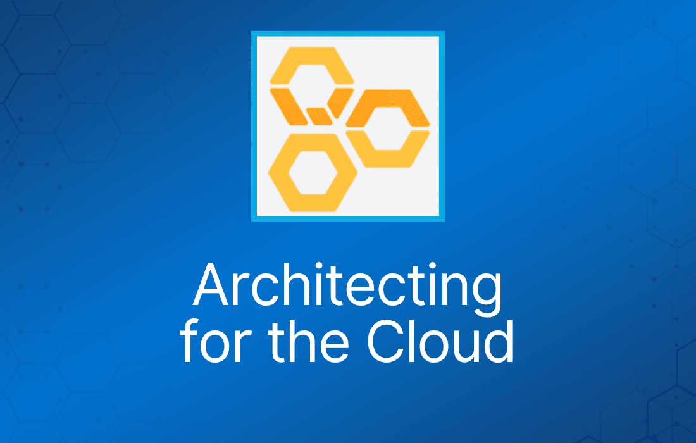

云架构设计（Architecting for the Cloud）是 Cloud Practitioner 考试的核心考点之一。这个话题可能比较枯燥，尤其是如果你是非技术背景出身，但请确保你在概念层面熟悉这些内容，因为考试中确实会出题。
请阅读以下 AWS 博客文章获取更多信息：
https://aws.amazon.com/blogs/apn/the-6-pillars-of-the-aws-well-architected-framework/
云计算在以下方面与传统环境不同：
IT 资产成为可编程资源
在 AWS 上，服务器、数据库、存储以及更高层的应用组件都可以在几秒钟内实例化。
你可以将它们视为临时的、用完即弃的资源，摆脱固定且有限的 IT 基础设施带来的僵化与约束。
这彻底改变了你进行变更管理、测试、可靠性保障和容量规划的方式。
全球化、高可用且容量无限
借助 AWS 的全球基础设施，你可以将应用部署到最能满足需求的 AWS 区域。
对于全球化应用，你可以使用 Amazon CloudFront 内容分发网络（CDN）来降低世界各地最终用户的访问延迟。
跨多个数据中心运行生产应用和数据库以实现高可用和容错，也变得更加容易。
更高层的托管服务
AWS 客户还可以使用广泛的计算、存储、数据库、分析、应用和部署服务。
这些服务开发者可以即时使用，能够减少对内部专业技能的依赖，让组织更快地交付新解决方案。
这些服务由 AWS 托管，可以降低运维复杂度和成本。
内建安全性
AWS 云提供治理能力，可以持续监控 IT 资源的配置变更。
由于 AWS 资产是可编程资源，你的安全策略可以固化并嵌入到基础设施的设计之中。
设计原则
可扩展性（Scalability）
预期会随时间增长的系统需要构建在可扩展的架构之上。
垂直扩展（Scaling Vertically）
垂直扩展通过提升单个资源的规格来实现（例如，为服务器升级更大的硬盘或更快的 CPU）。
在 Amazon EC2 上，只需停止实例并将其调整为具有更多 RAM、CPU、IO 或网络能力的实例类型即可轻松实现。
水平扩展（Scaling Horizontally）
水平扩展通过增加资源数量来实现（例如，为存储阵列添加更多硬盘，或添加更多服务器来支撑应用）。
这是构建利用云计算弹性的互联网级应用的绝佳方式。
下表详细说明了水平扩展与垂直扩展之间的区别：
| 水平扩展 | 垂直扩展 |
| 随需求增长增加更多实例 | 随需求增长为现有实例增加更多 CPU 和/或 RAM |
| 扩缩容无需停机 | 扩缩容需要重启 |
| 可使用 AWS Auto-Scaling 等服务自动完成 | 需要脚本或自动化工具来实现自动化 |
| 扩展能力无上限 | 扩展能力受最大实例规格限制 |
无状态应用（Stateless application）：
- 无状态应用是不需要了解先前交互信息、也不存储会话信息的应用。
- 无状态应用可以水平扩展，因为任何请求都可以由任何可用的计算资源（例如 EC2 实例、AWS Lambda 函数）处理。
无状态组件：
- 大多数应用都需要维护状态信息。
- 例如，Web 应用需要追踪用户是否已登录，否则可能会根据之前的操作呈现个性化内容。
- Web 应用可以使用 HTTP cookie 在客户端浏览器中存储会话信息（例如购物车中的商品）。
- 考虑只在 HTTP cookie 中存储唯一的会话标识符，而将更详细的用户会话信息存储在服务端。
- DynamoDB 常用于存储会话状态，以维持无状态架构。
- 对于较大的文件，可以使用共享存储系统，如 S3 或 EFS。
- 多步骤工作流可以使用 SWF。
有状态组件（Stateful component）：
- 数据库是有状态的。
- 许多遗留应用是有状态的。
- 可以使用带会话亲和性（session affinity）的负载均衡来实现有状态组件的水平扩展。
- 但会话亲和性并不能得到保证，且已有会话无法从新启动的节点中受益。
分布式处理（Distributed processing）：
- 涉及处理海量数据的场景（例如任何单个计算资源无法及时处理的任务）都需要采用分布式处理方式。
- 通过将任务及其数据拆分成许多小的工作片段，你可以在更大的可用计算资源集合中的任意资源上执行它们。
用一次性资源替代固定服务器
将服务器和其他组件视为临时资源。
需要多少就启动多少，需要多久就用多久。
固定、长期运行的服务器存在一个问题：配置漂移（configuration drift，即随着时间推移不断应用变更和软件补丁）。
这个问题可以用“不可变基础设施”（immutable infrastructure）模式来解决：服务器从不更新，而是在需要时用新服务器替换。
实例化计算资源
你不会想手动设置新资源及其配置和代码。
使用自动化、可重复的流程，避免冗长的交付周期，也不容易因人为错误出问题。
Bootstrapping（引导）：
- 执行自动化的引导操作来修改默认配置。
- 这包括安装软件或拷贝数据以使资源达到特定状态的脚本。
- 你可以将不同环境之间有差异的配置细节参数化。
Golden Image（黄金镜像）：
- 某些资源类型可以从 golden image 启动。
- 例如 EC2 实例、RDS 实例和 EBS 卷。
- golden image 是资源在特定状态下的快照。
- 与 bootstrapping 相比，golden image 启动更快，并且消除了对配置服务或第三方仓库的依赖。
基础设施即代码（Infrastructure as Code）：
- AWS 资产是可编程的，因此你可以应用软件开发的技巧、实践和工具，让整个基础设施可复用、可维护、可扩展、可测试。
自动化
在传统 IT 基础设施中，你经常必须手动响应各种事件。
在 AWS 上部署时，有大量自动化的机会。
这既能提高系统的稳定性，也能提升组织的效率。
使用 AWS 服务实现自动化的例子包括：
- AWS Elastic Beanstalk——在 AWS 上启动并运行应用最快、最简单的方式。
- Amazon EC2 Auto Recovery——你可以创建一个 Amazon CloudWatch alarm 来监控 Amazon EC2 实例，并在实例受损时自动恢复它。
- Auto Scaling——借助 Auto Scaling，你可以保持应用可用性，并根据你定义的条件自动增减 Amazon EC2 容量。
- Amazon CloudWatch Alarms——你可以创建一个 CloudWatch alarm，当某个指标在指定数量的周期内超出指定阈值时，发送 Amazon Simple Notification Service (Amazon SNS) 消息。
- Amazon CloudWatch Events——CloudWatch 服务提供近乎实时的系统事件流，描述 AWS 资源的变化。
- AWS OpsWorks Lifecycle event——AWS OpsWorks 通过 lifecycle event 支持持续配置，自动更新实例配置以适应环境变化。
- AWS Lambda Scheduled event——这类事件允许你创建一个 Lambda 函数，并让 AWS Lambda 按计划定期执行它。
松耦合（Loose Coupling）
随着应用复杂度增加，IT 系统的一个理想特性是可以拆分为更小的、松耦合的组件。
这意味着 IT 系统的设计应减少相互依赖——某个组件的变更或故障不应级联到其他组件。
设计原则包括：
- 定义良好的接口（Well-defined interface）——通过只允许经由特定的、技术无关的接口（如 RESTful API）进行交互，降低系统中的相互依赖。
- 服务发现（Service discovery）——分散的资源必须有一种在无需预先了解网络拓扑的情况下相互发现的机制。
- 异步集成（Asynchronous integration）——这是另一种松耦合形式，交互不需要立即响应（想想 SQS 队列或 Kinesis）。
- 优雅失败（Graceful failure）——构建应用时应使其能优雅地处理失败（降低故障影响并实现重试）。
用服务，而不是服务器
使用传统 IT 基础设施时，组织必须构建和运维各种各样的技术组件。
AWS 提供广泛的计算、存储、数据库、分析、应用和部署服务，帮助组织更快行动并降低 IT 成本。
托管服务：
- 在 AWS 上，有一组服务提供开发者可以直接使用的构建块，为其应用提供动力。
- 这些托管服务包括数据库、机器学习、分析、队列、搜索、邮件、通知等。
Serverless 架构：
- 另一种可以降低应用运维复杂度的方法是 serverless 架构。
- 可以在不管理任何服务器基础设施的情况下，为移动、Web、分析和物联网（IoT）构建事件驱动和同步的服务。
数据库
在传统 IT 基础设施中，组织往往受限于可用的数据库和存储技术。
在 AWS 上，托管数据库服务以开源的成本提供企业级性能，消除了这些限制。
关系型数据库
关系型数据库（通常称为 RDBS 或 SQL 数据库）将数据规范化为定义良好的表格结构（即 table），由行和列组成。
它们提供强大的查询语言、灵活的索引能力、强完整性控制，以及快速高效地组合多张表数据的能力。
Amazon RDS 是一种关系型数据库服务。
可扩展性：
- 关系型数据库可以垂直扩展（例如升级到更大的 RDS DB 实例）。
- 对于读密集型场景，可以使用 read replica 水平扩展。
- 要将写容量扩展到单个实例以上，需要进行数据分区或分片（sharding）。
高可用性：
- 对于生产数据库，Amazon 建议使用 RDS Multi-AZ，它会在另一个 AZ 中创建一个同步复制的备实例。
- 使用 Multi-AZ，RDS 可以在无需管理干预的情况下故障转移到备节点。
反模式（Anti-Pattern）：
- 如果你的应用主要是索引和查询数据，不需要 join 或复杂事务，建议考虑使用 NoSQL 数据库。
- 如果有大型二进制文件（音频、视频和图片），将实际文件存储在 S3 中、只在数据库中保存文件元数据会更高效。
NoSQL 数据库
NoSQL 用于描述这样一类数据库：它们牺牲了关系型数据库的部分查询和事务能力，换来更灵活的数据模型，并能无缝水平扩展。
NoSQL 数据库使用多种数据模型，包括图、键值对和 JSON 文档。
DynamoDB 是 Amazon 的 NoSQL 数据库服务。
可扩展性：
- NoSQL 数据库引擎通常通过数据分区和复制，以水平方式同时扩展读和写。
高可用性：
- DynamoDB 在一个 AWS 区域内的三个设施之间同步复制数据，实现容错。
反模式：
- 如果你的 schema 无法反规范化（denormalize），且应用需要 join 或复杂事务，建议改用关系型数据库。
- 如果有大型二进制文件（音频、视频和图片），建议将文件存储在 Amazon S3 中，并在数据库中只存储文件的元数据。
数据仓库
数据仓库是一种专门的关系型数据库，针对海量数据的分析和报表进行了优化。
它可以将来自不同来源的事务数据整合起来，用于分析和决策。
Amazon Redshift 是一种托管数据仓库服务，设计目标是运行成本不到传统方案的十分之一。
可扩展性：
- Amazon Redshift 通过大规模并行处理（MPP）、列式数据存储以及有针对性的数据压缩编码方案的组合，实现高效存储和最佳查询性能。
- RedShift 特别适合对超大型数据集进行分析和报表类负载。
高可用性：
- Redshift 具备多项增强数据仓库集群可靠性的特性。
- 多节点集群会将数据复制到集群内的其他节点。
- 数据会持续备份到 S3。
- RedShift 持续监控集群健康状况，从故障磁盘重新复制数据，并在必要时更换节点。
反模式：
- 由于 Amazon Redshift 是基于 SQL 的关系型数据库管理系统（RDBMS），它与其他 RDBMS 应用和商业智能工具兼容。
- 虽然 Amazon Redshift 提供典型 RDBMS 的功能（包括联机事务处理 OLTP 功能），但它并非为此类负载而设计。
搜索
需要复杂搜索功能的应用通常会超出关系型或 NoSQL 数据库的能力范围。
搜索服务可以对结构化和自由文本格式的数据进行索引和搜索，并支持其他数据库不具备的功能，例如可定制的结果排序、用于过滤的分面（faceting）、同义词、词干提取（stemming）等。
可扩展性：
- Amazon CloudSearch 和 Amazon ES 都使用数据分区和复制来水平扩展。
高可用性：
- 这两项服务都提供跨 Availability Zone 冗余存储数据的功能。
消除单点故障
当系统能够承受单个或多个组件的故障时，它就是高可用的。
在架构的每一层都实现自动恢复、减少中断。
引入冗余
单点故障可以通过引入冗余来消除。
在备用冗余（standby redundancy）中，当资源发生故障时，通过一个称为故障转移（failover）的过程在备用资源上恢复功能，这通常需要一些时间才能完成。
在主动冗余（active redundancy）中，请求被分发到多个冗余的计算资源，当其中一个发生故障时，其余资源可以简单地承担更大的负载份额。
检测故障
在故障检测和响应两方面都尽可能多地实现自动化。
ELB 和 Route53 等服务通过将流量路由到健康终端节点来屏蔽故障。
Auto Scaling 可以配置为自动替换不健康的节点。
你也可以使用 EC2 auto-recovery、OpsWorks 和 Elastic Beanstalk 替换不健康的节点。
持久化的数据存储
设计架构时要同时保护数据的可用性和完整性。
数据复制是引入数据冗余副本的技术。
它可以帮助水平扩展读容量，同时也能提高数据的持久性和可用性。
复制可以有几种不同的模式：
- 同步复制——只有当数据在主实例和副本实例上都持久化存储后，事务才会被确认。可用于保护数据完整性（低 RPO）和扩展读容量（强一致性）。
- 异步复制——主节点上的变更不会立即反映到副本上。可用于水平扩展系统的读容量（存在复制延迟），以及提升数据持久性（可能丢失部分数据）。
- 基于仲裁的复制（quorum-based replication）——结合同步和异步复制，适合大规模分布式数据库系统。
自动化的多数据中心弹性
使用传统基础设施时，数据中心之间的故障转移通过灾难恢复计划来执行。
数据中心之间的长距离意味着延迟会使同步复制变得不切实际。
故障转移往往会导致数据丢失和代价高昂的数据恢复过程。
在 AWS 上，可以采用更简单、更高效的方式来防范这类故障。
每个 AWS 区域包含多个相互独立的位置，称为可用区（Availability Zone，AZ）。
每个 AZ 在设计上与其他 AZ 的故障隔离。
一个 AZ 就是一个数据中心，在某些情况下，一个 AZ 由多个数据中心组成。
同一区域内的 AZ 之间提供低成本、低延迟的网络连接。
这使你可以以同步方式跨数据中心复制数据，从而让故障转移实现自动化并对用户透明。
故障隔离与传统的水平扩展
虽然主动冗余模式在均衡流量和应对实例或可用区中断方面非常出色，但如果请求本身有问题，它就不够用了。
如果某个特定请求恰好触发了一个导致系统故障的 bug，那么调用方可能会通过在所有实例上反复重试同一请求而引发级联故障。
对传统水平扩展可以做的一项故障隔离改进叫做分片（sharding）。
类似于传统数据存储系统中使用的技术，你可以将实例分组为若干 shard，而不是把所有客户的流量分散到每个节点上。
这样，你可以将故障对客户的影响降低到与 shard 数量成反比的程度。
成本优化
仅仅将现有架构迁移到云上，组织就可以利用 AWS 的规模经济降低资本支出并节省成本。
通过迭代并采用更多 AWS 能力，还有机会打造进一步优化成本的云架构。
合理选型（Right Sizing）：
- 在某些情况下，你应选择满足负载要求的最便宜的类型。
- 在另一些情况下，使用较少数量、更大规格的实例可能带来更低的总成本或更好的性能。
- 根据负载对 CPU、RAM、网络、存储大小和 I/O 的使用情况进行基准测试，选择合适的实例类型。
- 通过选择适合需求的存储方案来降低成本。
- 例如，S3 提供多种存储类别，包括 Standard、Reduced Redundancy 和 Standard-Infrequent Access。
- EC2、RDS 和 ES 支持不同的 EBS 卷类型（magnetic、general-purpose SSD、provisioned IOPS SSD），你需要进行评估。
弹性（Elasticity）：
- 尽可能多地为 EC2 负载规划 Auto Scaling，以便在需要时水平扩展，并自动收缩以降低成本。
- 自动化地在不使用时关闭非生产负载。
- 尽可能用不需要你做任何容量决策的 AWS 托管服务替代 EC2 负载。例如：
- ELB。
- CloudFront。
- SQS。
- Kinesis Firehose。
- Lambda。
- SES。
- CloudSearch。
- 或者使用可以按需调整容量的服务。例如：
- DynamoDB。
- RDS。
- Elasticsearch Service。
利用多样化的购买选项：
- EC2 On-Demand 实例定价提供最大的灵活性，无需长期承诺。
- 还有两种 Amazon EC2 实例的付费方式可以帮助你减少支出：Reserved Instance 和 Spot Instance。
预留容量（Reserved Capacity）
EC2 Reserved Instance 允许你预留 Amazon EC2 计算容量，相比 On-Demand 实例定价，可享受大幅折扣的小时费率。
这非常适合最低容量需求可预测的应用。
Spot 实例
对于负载不稳定的场景，可以考虑使用 Spot 实例。
EC2 Spot 实例允许你对闲置的 EC2 计算容量出价。
由于 Spot 实例的价格通常低于 On-Demand 定价，你可以显著降低应用的运行成本。
Spot 实例非常适合开始和结束时间灵活的负载。
如果 Spot 市场价格超过你的出价，你的实例将被自动终止，且实例已运行的不足一小时部分不会收费。
因此，Spot 实例非常适合能够容忍中断的负载。
缓存
缓存是一种存储先前计算结果以备将来使用的技术。
这项技术用于提升应用性能并提高实现方案的成本效益。
它可以应用在 IT 架构的多个层面。
应用数据缓存
应用可以设计为从快速、托管的内存缓存中存取信息。
缓存的信息可以包括 I/O 密集型数据库查询的结果，或计算密集型处理的结果。
边缘缓存
静态内容和动态内容的副本可以缓存在 Amazon CloudFront 上，这是一个由全球多个边缘站点组成的内容分发网络（CDN）。
边缘缓存让内容可以由离用户更近的基础设施提供，降低延迟，并提供大规模向最终用户分发大型热门对象所需的高而稳定的数据传输速率。
安全
你在传统 IT 基础设施中已经熟悉的大多数安全工具和技术都可以在云中使用。
与此同时，AWS 允许你通过多种方式提升安全性。
AWS 是一个允许你将安全控制的设计固化到平台本身之中的平台。
利用 AWS 特性实现纵深防御
网络层安全包括构建 VPC 拓扑，使用 subnet、security group 和路由控制来隔离基础设施的各个部分。
像 AWS WAF 这样的 Web 应用防火墙服务，可以帮助保护 Web 应用免受 SQL 注入和应用代码中其他漏洞的攻击。
在访问控制方面，你可以使用 IAM 定义一组细粒度策略，并将其分配给用户、组和 AWS 资源。
最后，AWS 平台提供丰富的选项，通过加密保护传输中和静态的数据。
将安全责任转移给 AWS
AWS 采用安全责任共担模型：AWS 负责底层云基础设施的安全，你负责保护你在 AWS 上部署的负载。
减少特权访问
当你将服务器视为可编程资源时，也可以在安全领域利用这一点。
消除对生产环境 guest 操作系统访问的需求。
如果实例出现问题，你可以自动或手动终止并替换它。
在传统环境中，服务账户通常会被分配存储在配置文件中的长期凭证。
在 AWS 上，你可以改用 IAM role，使用短期凭证向运行在 Amazon EC2 实例上的应用授予权限。
安全即代码（Security as Code）
传统的安全框架、法规和组织策略定义了与防火墙规则、网络访问控制、内外部 subnet 和操作系统加固等相关的安全要求。
你也可以在 AWS 环境中实现这些要求，而且现在可以把它们全部写入一个定义“黄金环境”（Golden Environment）的脚本中。
这意味着你可以创建一个捕获安全策略的 AWS CloudFormation 脚本，并可靠地部署它。
安全最佳实践现在可以在多个项目之间复用，并成为持续集成流水线的一部分。
你可以将安全测试纳入发布周期，自动发现应用的缺口以及与安全策略的偏离。
实时审计
对环境进行测试和审计是在保证安全的前提下快速前进的关键。
传统的定期检查方式并不足够，尤其是在变化频繁的敏捷环境中。
在 AWS 上，可以实现对控制的持续监控和自动化，最大限度地降低安全风险暴露。
AWS Config、Amazon Inspector 和 AWS Trusted Advisor 等服务会持续监控合规性或漏洞。
借助 AWS Config rule，即使某个组件只是短暂地不合规，你也能知晓。
你可以为应用实现全面的日志记录（使用 Amazon CloudWatch Logs），并通过启用 AWS CloudTrail 记录实际的 AWS API 调用。
日志随后可以以不可变的方式存储，并自动处理，以通知你甚至代表你采取行动，保护组织免受不合规的影响。
你可以使用 AWS Lambda、Amazon EMR、Amazon Elasticsearch Service 或 AWS Marketplace 中的第三方工具扫描日志，检测诸如未使用的权限、特权账户滥用、密钥使用、异常登录、策略违规和系统滥用等问题。